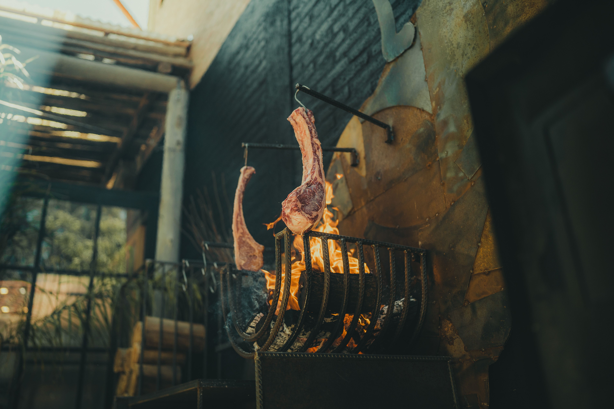

|
|
 |
Un Vistazo a la Tradición Gastronómica Argentina
Los ingredientes emblemáticos de la cocina argentina son más que simples componentes culinarios. Son los protagonistas de una historia gastronómica que se ha entrelazado con la cultura y la identidad de la nación a lo largo de los siglos. Desde la llegada de los gauchos en las vastas llanuras hasta las influencias europeas que se fusionaron con los sabores autóctonos, cada ingrediente es un testimonio vivo de la rica historia de Argentina.
Carne de Res de Calidad
La carne de res de calidad es el corazón de la cocina argentina. Proveniente de una industria ganadera reconocida a nivel mundial, los cortes de carne son una manifestación de la dedicación a la excelencia. Estos cortes se asan a la parrilla con maestría, permitiendo que los sabores naturales de la carne brillen. Cada bocado es una experiencia sensorial, desde la jugosidad del bife de chorizo hasta la intensidad del asado de tira. La carne une a las personas en torno a la mesa, simbolizando la pasión y el compromiso con la autenticidad gastronómica.
Cebolla
La cebolla, humilde y versátil, es un elemento esencial en la cocina argentina. Su presencia se siente en cada etapa de la preparación, desde la base de sofritos hasta las salsas y rellenos. Ya sea caramelizada para aportar dulzura o cruda para un toque picante, la cebolla agrega profundidad y carácter a los platos. Este ingrediente es una oda a la tradición y la conexión con la tierra, resaltando la habilidad de transformar lo simple en lo extraordinario.
Chimichurri
El chimichurri es la encarnación de la pasión argentina por los sabores audaces. Una mezcla vivaz de perejil, ajo, vinagre, aceite de oliva y especias, esta salsa refrescante y picante es un acompañamiento indispensable para carnes y otros platillos. Su presencia en la mesa añade un estallido de frescura y un equilibrio de sabores. El chimichurri no solo condimenta la comida, sino que también representa la creatividad y el disfrute de la vida.
Maíz
El maíz, un grano versátil, encuentra su camino en la cocina argentina de diversas formas. Desde la suave humita, una combinación de choclo y especias envueltas en hojas de maíz, hasta la polenta reconfortante que acompaña a los platos principales, el maíz aporta textura y sabor. Es un tributo a la tierra fértil y a la historia indígena que ha dejado una marca indeleble en la cultura culinaria argentina. Cada bocado de maíz es una conexión con las raíces y la adaptabilidad.
Yerba Mate
La yerba mate es más que una bebida; es una tradición compartida que fomenta la amistad y la conversación. Esta infusión amarga y energizante se bebe en todo el país, formando la base de encuentros sociales. El mate simboliza la hospitalidad y la importancia de la pausa en medio de la vida agitada. Cada sorbo es un recordatorio de la conexión humana y el placer de saborear el momento.
Estos ingredientes, tan diversos como la geografía y la gente de Argentina, forman la base de una cocina que celebra la vida y la pasión por los sabores auténticos.
 |
|